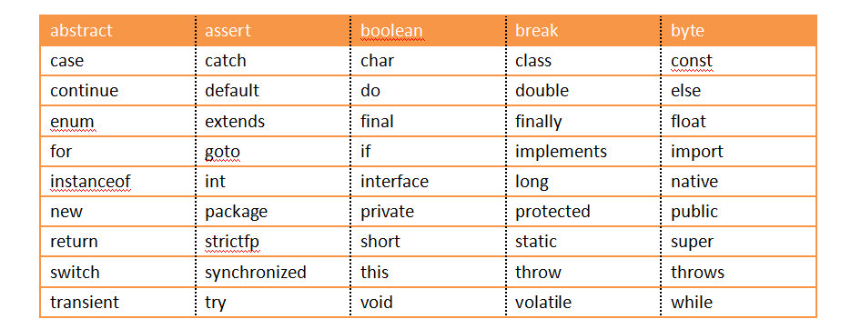
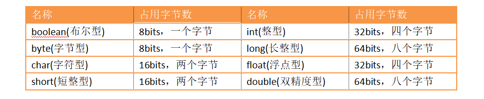
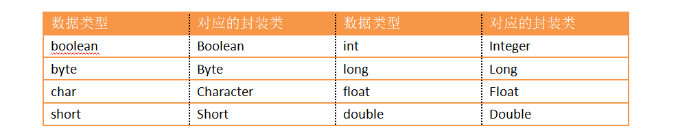
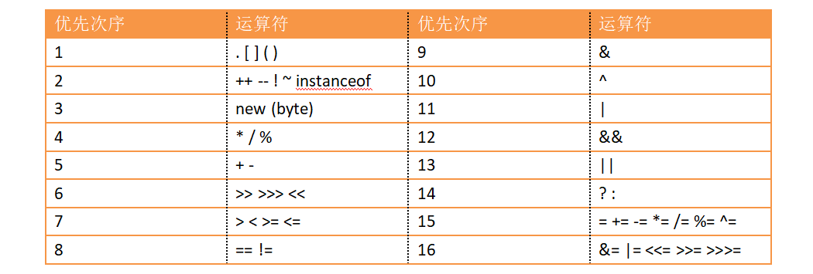

Java符号包含五类：标识符、关键字、常量及字面量、运算符、分隔符
定义：用于标明程序中元素的名字，如类、方法和变量
命名规则：
·由字母、数字、下划线(_)和美元符号($)构成的字母序列
·必须以字母、下划线(_)或美元符号($)开头，不能以数字开头
·长度无限制，但不能包含空格，不能是Java关键字
·不能是true、false或null
定义：具有专门意义和用途，不能当作一般标识符使用
注意：
·所有Java关键字都是小写的
·true、false、null是字面量，不是关键字
Java关键字：

基本数据类型：

基本数据类型的封装：

常量：值一直保持不变的量，用final修饰
字面量：直接表示一个值，可以是数值、字符、布尔型
1）数值型：表示一个具体的数值
2）布尔型：只有两个值，true、false
3）字符型：表示一个字符，包含在单引号中
4）字符串：表示一串字符，包含在双引号中
算术运算符：
++ 自增
-- 自减
+ 加
- 减
* 乘
/ 除
% 取余
逻辑运算符：
& 逻辑与
| 逻辑或
^ 逻辑异或
&& 逻辑与(左边为假时，右边的值不再计算)
|| 逻辑或(左边为真时，右边的值不再计算)
! 取反(逻辑非)
关系运算符：
== 等于
!= 不等于
> 大于
< 小于
>= 大于等于
<= 小于等于
位运算符：
~ 按位取反
& 按位与
| 按位或
^ 按位异或
>> 位右移，符号不变
<< 位左移
>>> 不带符号右移，左边用0填补
其他运算符：
1）三目运算符：k = x ? y : z（当x为真是，k=y；否则k=z）
2）复杂赋值运算符：例如 +=
3）操作运算符：又称引用操作符，是类的成员变量和成员方法获取操作符，用"."引用对象的成员
4）new操作符：作用是在堆栈中生成对象的实例
5）[ ]和( )操作符：
[ ]主要用于数组
( )主要用于方法
6）对象运算符instanceof：用于测定一个对象是否属于某个指定的类或其子类的实例
7）赋值运算符："="，无"等于"的意思
运算符的优先等级：
